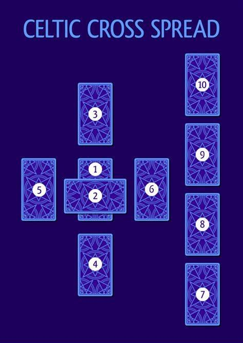

ЭХНИЙ ХӨЗРИЙГ: эргүүлээд, Тодорхойлогчийн дээр түүнийг тавиад; “Энэ түүнийг хучих болно” гэж хэлнэ. Энэ бол тухайн хүн эсвэл зүйлийн одоогийн байгаа ерөнхий орчин, тухайн хүн болон зүйлд үзүүлэх нөлөөлөл юм.
ХОЁРДУГААР ХӨЗРИЙГ: эргүүлээд, түүнийг хөндлөнгөөр нь тавьж, “Энэ бол түүний саад тотгорыг илэрхийлэх болно” гэж хэлнэ. Хэрэв эерэг хөзөр байх аваас эсрэг талын хүчин ноцтой биш ба энэ нь өөрөө сайн зүйл байх боловч тухайн холболтын хувьд тийм ч сайн үр дүнгүй байх болно.
ГУРАВДУГААР ХӨЗРИЙГ: эргүүлээд, Тодорхойлогчийн толгойн дээр тавиад: “Энэ түүнийг титэмлэх болно” гэж хэлнэ. Энэ нь (а) түүний одоогийн нөхцөл байдалд хүрч чадах хамгийн сайн үр дүнг, эсвэл (б) энэ асуудалд түүний хандах байр суурийг илэрхийлдэг; (в) тэр өөрөө юу хийхийг хүсч байгаа; (г) гэхдээ энэ нь одоогоор хараахан биелэлээ олоогүй байгааг илэрхийлнэ.
ДӨРӨВДҮГЭЭР ХӨЗРИЙГ: эргүүлээд, үүнийг Тодорхойлогчийн хөлний доор байрлуулаад: “Энэ түүний доор байна” гэж хэлнэ. Энэ нь аль хэдийн бодит байдалд шилжсэн, Тодорхойлогчийн өөрийн болгосон зүйлийн үндэс суурийг харуулдаг.
ТАВДУГААР ХӨЗРИЙГ: эргүүлээд, үүнийг Тодорхойлогчийн эсрэг тийш харж байгаа талд тавиад: “Энэ бол түүний ард байна” гэж хэлнэ. Энэ нь түүний зөрөн өнгөрч буй урсгал бөгөөд энэ нь өнгөрсөн үед үлдсэн асуудал ч байж магад.
ЗУРГАДУГААР ХӨЗРИЙГ: эргүүлээд, үүнийг Тодорхойлогчийн нүүрэн талд тавьж, “Энэ бол түүний өмнө байна” гэж хэлнэ. Энэ нь идэвхитэй болж эхэлж буй нөлөөллийг харуулж байгаа бөгөөд ойрын хугацаанд биелэлээ олж үйл хөдлөлд орох болно.
Эхний зургаан хөзөр (нэмэх нь Тодорхойлогч) одоо загалмай хэлбэрээр байрлагдсан байх ёстой. Дараагийн дөрвөн хөзрийг ар араас нь дарааллан эргүүлж, баруун талдаа нэг хөзрийг нөгөөгийн дээр байрлуулж явна.
ДОЛООДУГААР ХӨЗӨР: дахь нь түүнийг өөрийг нь, тухайн нөхцөл байдалд дахь түүний байр суурь, хандлагыг харуулдаг.
НАЙМДУГААР ХӨЗӨР: нь түүний гэр орон, өөрөөр хэлбэл тухайн асуудалд нөлөөлж буй орчин, тухайлбал, түүний амьдрал дахь байр суурь, ойр дотны хүмүүсийн нөлөө гэх мэтийг илэрхийлдэг.
ЕСДҮГЭЭР ХӨЗӨР: нь түүний итгэл найдвар, айдсыг илэрхийлдэг.
АРАВДУГААР ХӨЗӨР: нь юу тохиохыг, эцсийн үр дүнг илэрхийлдэг. Чухамхүү энэ хөзрөнд мэргэ төлөгч өөрийн зөн совингийн чадвар, туршлага, ой санамжаа уг хөзөртэй хавсаргасан албан ёсны мэргэ төлгийн утгын талаар онцгойлон анхаарах ёстой.
Тооцоололдоо тулгуурлан, хэрэв эцсийн тодорхой дүгнэлт гаргаж чадвал мэргэ дуусч, зөвхөн үр дүнг боловсруулах л үлдэнэ. Дүгнэж хэлэхэд, царайны өнгө зүсний тухайд тэдгээрийг өнгөнд хуваарилахад уламжлалт байдлаар авч үзэх шаардлагагүй юм. Уг хүний зан төрхөнд үндэслэн дүгнэлт гаргаж болно; Хэт бараан зүстэй хүн маш их эрч хүчтэй байж болох ба Зоосны өнгөнөөс илүүтэйгээр Илдний хөзрөөр дүрслэгдсэн нь хавьгүй дээр байна. Нөгөөтэйгүүр, идэвхи сул, ноомой маягийн цайвар цагаан царайтай хүнийг Саваа гэхээсээ илүү Аяганд хуваарилах учиртай. Энэ аргаар харьцангуй богино хугацаанд асар их боломжийг олж авах боломжтой бөгөөд төлөгчийн авьяас билэгт зориулан гар цайлгах бэлгийг үргэлж өгөх ёстойг анхаарах хэрэгтэй.